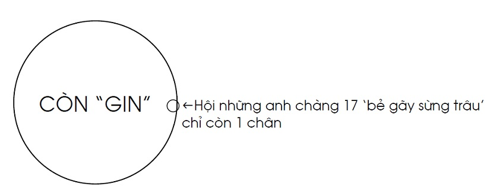
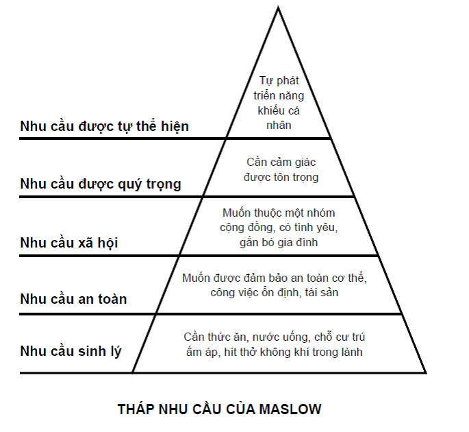

Chương 1

ăm 1847, các công ty đường sắt nhỏ như Manchester & Leeds Railway, East Lancashire Railway, và West Lancashire Railway cùng hợp nhất để lập nên một đại công ty mang tên Lancashire & Yorkshire Railway (L&YR). Sở hữu đến 1650 đầu máy, L&YR trở thành công ty hỏa xa lớn thứ ba ở miền bắc nước Anh, nối liền Liverpool và Manchester với York và Goole, đồng thời chạy qua những đô thành như Bolton, Wigan, Blackpool, vv...Là công ty lớn, nên cơ cấu tổ chức của L&YR khá phức tạp, với các đơn vị chính là Ban Kế Hoạch - Kinh Doanh, Ban Đầu Máy - Toa Xe, và Ban Quản Lý Hạ Tầng Đường Sắt. Ban Đầu Máy - Toa Xe về sau tách ra làm hai ban: đầu máy riêng, toa xe riêng. Ban Toa Xe lúc đầu tọa lạc tại khu Miles Platting, cách trung tâm Manchester độ chừng một dặm, sau vụ hỏa hoạn bị cháy rụi cả trụ sở vào năm 1873, thì chuyển đến địa chỉ mới ở đường North Road, khu Newton Heath. Nhân viên trong ban vào cuối thập niên 1870 ước chừng 800 đến 900 người.
Đầu thế kỷ 19 là thời hoàng kim của "chủ nghĩa tư bản dã man". Công nhân nước Anh bị giới chủ chèn ép, áp bức đủ điều: Lương bổng đã thấp, mà mỗi ngày đều phải nai lưng làm việc không ngơi từ 14 đến 15 tiếng. Mãi đến khi đạo Luật Công Xưởng được ban hành, giảm giờ làm xuống còn 10 tiếng mỗi ngày, tình hình mới được cải thiện.10 tiếng hãy còn nhiều, song vào thời điểm ấy đã là tiến bộ, giúp công nhân sau mỗi ngày làm việc có thêm thời gian để học hành trau dồi trình độ, và giải trí, làm phong phú cho đời sống tinh thần.Dĩ nhiên, trong thời đại mà vô tuyến truyền thanh, truyền hình, hay mạng Internet còn chưa ra đời, hoạt động giải trí phổ biến nhất, ngoài nhậu nhẹt, là thể thao. Một trong những môn thể thao được ưa chuộng nhất là bóng đá.
Hòa cùng nhịp đập "khai phóng" trên cả nước, từ năm 1859, L&YR bắt đầu tiến hành những chính sách nhằm chăm lo đời sống người lao động, rút ngắn khoảng cách giữa các giai cấp, trong đó có việc tổ chức CLB thể thao cho công nhân. Riêng tại Ban Toa Xe, một tổ chức mang tên Ủy Ban Thực Phòng (UBTP - Dining Room Committee) được thành lập. Ủy Ban này không chỉ phụ trách chuyện ẩm thực, ăn uống, mà còn chịu trách nhiệm về phúc lợi công nhân nói chung. Năm 1878 (chưa rõ ngày tháng), Ủy Ban quyết định lập ra một đội bóng đá[1] giành riêng cho nhân viên Ban Toa Xe, mang tên Newton Heath (L&YR) Football Club, gọi tắt là Newton Heath. Các yếu nhân địa phương như A.J. Balfour, nghị sỹ, sau này trở thành thủ tướng Anh; C.P. Scott, chủ báo Manchester Guardian, được mời tham gia BLĐ CLB.Chủ tịch đầu tiên của CLB là Trưởng Ban Toa Xe Frederick Attock.
(Cùng thời điểm ấy, tại L&YR còn một CLB khác, tên là Newton Heath Locomotive, đội bóng của những tài xế và công nhân Ban Đầu Máy. Khi nghiên cứu về Manchester United, nhiều tác giả viết nhầm rằng đội "Loco" này là tiền thân của Quỷ Đỏ, thật ra phải là Newton Heath (L&YR) mới đúng. Trong sách này, khi dùng từ Newton Heath, chúng tôi chỉ về Newton Heath (L&YR), không phải Newton Heath Locomotive[2].)
Có đội thì phải có sân. Thấy ngay trước sở làm có bãi đất trống thuộc sở hữu giáo hội Anh Giáo, địa phận Manchester, Newton Heath nhờ công ty chủ quản ra mặt thuê giùm. Giáo hội sẵn sàng giúp đỡ, cho L&YR thuê đất với giá tượng trưng rất rẻ, công ty đem về cho Newton Heath thuê lại, cải tạo thành SVĐ North Road. Gọi là SVĐ cho oai, chứ North Road không có nổi một dãy khán đài, mặt sân thì gồ ghề đầy cát sỏi, không một cọng cỏ, đến mùa mưa luôn ướt sũng những nước với bùn. Khán giả đến xem không có ghế để ngồi, đành bá vai nhau đứng vòng chung quanh. Những hôm đông người đến quá, CLB phải lấy dây căng bốn mặt, ngăn không cho người hâm mộ lấn vào đường biên.Về phần cầu thủ, trước và sau mỗi trận đấu, họ phải ghé vào quán Three Crowns gần đó để thay quần áo.Đến khi Newton Heath thiết lập văn phòng tại khách sạn Shears, phòng thay đồ được đặt tại khách sạn này. Khổ nỗi, Shears lại cách North Road đến nửa dặm, nên sau 90 phút chạy đổ mồ hôi, cầu thủ lại phải cuốc bộ thêm một chặp mới được tắm rửa và thay bộ đồ dơ.
North Road chẳng phải Old Trafford, và bóng đá thế kỷ 19 cũng khác rất nhiều với bóng đá hiện đại. Tuy con người đã biết chơi với quả banh từ hàng ngàn năm trước, môn bóng đá như ta biết ngày nay chỉ mới được "hệ thống hóa" từ 1848, với sự ra đời của bộ luật túc cầu Cambridge. Tính đến năm Newton Heath ra đời, bóng đá vừa tròn 30 tuổi. Ngày đó, cầu thủ ra sân với những chiếc áo không số, và thủ môn mặc áo cùng màu với đồng đội, chỉ mang thêm chiếc nón trên đầu để phân biệt[3]. Trong túi trọng tài không có thẻ vàng thẻ đỏ, và các đội không có quyền thay người, đội nào có cầu thủ chấn thương giữa chừng, coi như xui xẻo, đành cắn răng chịu thiệt thòi. Mà chấn thương thì rất dễ xảy ra, vì quả bóng thời xưa nặng và cứng như đá cục, hễ trúng vào đầu là ngàn sao cứ thế tung bay!
Thuở ban đầu, bóng đá là cuộc chơi của những cá nhân, hễ ai có bóng cứ cắm đầu mà chạy, nhất quyết không chuyền. Trong bản tường thuật trận đấu quốc tế đầu tiên giữa Anh và Scotland năm 1872, chưa thấy khái niệm "chuyền" xuất hiện.Mãi dần dần, người ta mới biết cách phối hợp đồng đội, rồi thiết lập đội hình chiến thuật. Đội hình tối sơ chủ trương tấn công triệt để, với 5 tiền đạo, chỉ 3 tiền vệ và 2 hậu vệ, với các vị trí trên sân cụ thể như sau:
Từ đội hình 2-3-5 cơ bản, về sau xuất hiện biến thể WM, còn phổ biến đến tận thập niên 1950[4]:
Thông tin về Newton Heath những năm đầu rất hiếm hoi. Ta được biết từ năm 1879, đội ra sân với áo đấu mang hai màu: Vàng và xanh lá. CLB có bao nhiêu cầu thủ?HLV là ai?Thi đấu những trận nào? Mỗi trận thu hút bao nhiêu khán giả? Không thể biết, vì nay không còn tư liệu nào để tham khảo. Trận đấu đầu tiên của Newton Heath được chép trong lịch sử là trận thua đội hình hai của Bolton Wanderers 0-6 vào ngày 20 tháng 11, năm 1880. Một năm sau đó, ngày 12 tháng 11, 1881, diễn ra trận derby Manchester đầu tiên, dưới sự theo dõi của 3000 người hâm mộ: Newton Heath thắng 3-0 trước West Gorton St Marks, tiền thân của Manchester City.

Đồng phục vàng-xanh của Newton Heath (Ảnh: Prideofmanchester.com).
Thập niên 1880, Newton Heath bắt đầu tham dự các giải cúp địa phương.Năm 1883, độidự Cúp Lancashire, bị Blackburn Olympic vùi dập 7-2 ngay vòng một. Năm 1888, họ giành Manchester Senior Cup, sau chiến thắng 2-1 trước Manchester FC trong trận chung kết. Trong vòng bảy mùa kế tiếp, Newton Heath còn giành Senior Cup thêm 4 lần nữa.Đặc biệt, năm 1886, đội lần đầu dự Cúp FA danh giá.Trận vòng một gặp Fleetwood Rangers, Jack Doughty ghi cả hai bàn, giúp đội bóng ngành đường sắt thủ hòa 2-2. Theo đúng luật, sau khi kết thúc 90 phút, nếu vẫn hòa, hai CLB sẽ phải tái đấu; chẳng ngờ hôm đó, trọng tài lại “ngẫu hứng” bắt cả hai phải đá thêm giờ đến khi phân thắng bại mới thôi. Để phản đối trọng tài, các cầu thủ Newton Heath rủ nhau bỏ về nhà, không thèm đá, rốt cuộc bị xử thua trắng!
Từ khi có chút tiếng tăm, mỗi trận Newton Heath thi đấu tại North Road thu hút khoảng từ 3000 đến 8000 khán giả. Tiền vé ban đầu chỉ ba xu[5], sau tăng lên sáu. Nhiều cầu thủ Newton Heath trở thành chuyên nghiệp, tuy danh nghĩa là công nhân, nhưng trên thực tế chỉ đá banh lãnh lương. Để CLB ngày càng lớn mạnh, BLĐ còn chủ trương thu hút nhân tài từ khắp mọi nơi: Hễ thấy ở đâu có cầu thủ giỏi liền mời về đội. Cầu thủ những nơi khác cũng thích đến North Road, vì chơi cho Newton Heath đồng nghĩa với việc có một suất biên chế trong ngành đường sắt, và mỗi khi đi xe lửa đều được hưởng giá vé ưu đãi. Các tuyển thủ xứ Wales như Jack Powell, Tom Burke, cùng anh em nhà Doughty, Jack và Roger, lần lượt bỏ Wales mà đi, để trở thành…nhân viên hỏa xa. Ngay từ năm 1886, tờ Manchester Evening News đã phải than vãn: Trong đội hình Newton Heath, chẳng còn thấy cầu thủ địa phương nào!
Song song với việc tăng cường lực lượng, năm 1887, Newton Heath cho xây dựng một dãy khán đài nhỏ tại sân North Road, đến năm 1891 lại xây thêm hai dãy nữa. Một năm sau, BLĐ bổ nhiệm A.H. Albut làm HLV trựởng CLB. Trước Albut, Newton Heath có HLV hay không? Ta không biết. Có lẽ cũng có, nhưng tên tuổi đều thất truyền.
(Nói về HLV, xin được mở một dấu ngoặc: Những năm cuối thế kỷ 19, đầu 20, HLV trưởng CLB bóng đá chủ yếu ngồi văn phòng, xử lý giấy tờ, giải quyết các vấn đề tài chính, đối ngoại. Nếu có chỉ đạo về chiến thuật, HLV cũng chỉ truyền đạt cho trợ lý, rồi trợ lý thông báo lại cho cầu thủ, chứ bản thân HLV hầu như không bao giờ bước xuống sân cỏ.Đó là nói về các CLB có trợ lý.Tại những đội bóng không có trợ lý, cầu thủ chỉ tự tập với nhau, đàn anh chỉ bảo cho đàn em.)
Xây khán đài, rồi bổ nhiệm HLV, tất cả đều nhằm mục tiêu giành quyền tham dự giải VĐQG Anh.Hiện nay, nói đến hệ thống các giải VĐQG Anh, ta chỉ nghĩ đến Football League, thành lập năm 1888. Thật ra, ở thời điểm ấy, ngoài Football League danh giá nhất ra, vẫn còn các hệ thống khác như Football Combination và Football Alliance. Chưa đủ chuẩn dự Football League, Newton Heath đành gia nhập giải Combination, sau đó đến Alliance.Mãi đến năm 1892, khi Football Alliance sáp nhập vào Football League, CLB mới được thỏa mộng. Football League khi đó chia ra hai hạng: Hạng Nhất và Hạng Nhì. Newton Heath được nhận vào ngay giải Hạng Nhất.
Tuy nhiên, muốn lớn mạnh thì cần thoát xác.Càng tiến lên chuyên nghiệp, Newton Heath càng cảm thấy bộ áo đường sắt quá ư chật chội.Giữa CLB và công ty chủ quản ngày càng nảy sinh những mâu thuẫn trầm trọng.Rốt cuộc, BLĐ quyết định thoát ly khỏi L&YR, biến CLB thành một công ty trách nhiệm hữu hạn độc lập. Tên đội bóng từ nay không còn mang cái đuôi L&YR, chỉ đơn giản là Newton Heath. Và từ nay, miễn có tài năng, bất kỳ ai cũng có thể gia nhập đội, không nhất thiết phải là nhân viên ngành hỏa xa.
Không cần nói, các sếp sòng L&YR vô cùng bất mãn việc Newton Heath cả gan “phản thùng”. Họ phản ứng bằng cách cắt hết đặc quyền đặc lợi, không cho cầu thủ mua vé xe lửa giá rẻ nữa, đồng thời tăng giá thuê sân North Road lên cao ngất ngưởng. Hè năm 1893, họ đánh ván bài cuối cùng, thông báo cho Newton Heath rằng North Road là sở hữu chung của mọi nhân viên công ty, không phải của riêng CLB, do đó CLB không được quyền bán vé vào cửa trước mỗi trận đấu. Khi Newton Heath phản bác, L&YR lập tức đòi lại SVĐ, khiến đội bóng lâm vào cảnh…vô gia cư.
Đến đây thì nảy sinh một rắc rối nhỏ. Sân North Road đúng là do L&YR thuê của giáo hội Anh Giáo, họ nghiễm nhiên có quyền đuổi Newton Heath. Song khán đài trên sân lại do Newton Heath xây bằng vốn tự có, không phải từ ngân sách công ty. Để giải quyết vấn đề, L&YR trả cho Newton Heath gần 100 bảng, coi như mua lại khán đài. Số tiền này ít hơn nhiều so với phí tổn xây dựng, nhưng không muốn kiện tụng lôi thôi mãi về sau, BLĐ CLB đành ngậm bồ hòn, chấp nhận phí bồi thường, rồi nhanh nhanh lên đường đi tìm một sân bóng mới.
Ngày 8 tháng 4, 1893, trước 3000 khán giả, Newton Heath ra sân lần cuối tại North Road, hòa 3-3 với Accrington Stanley, trong trận đấu thuộc khuôn khổ giải Hạng Nhất. Bốn tuần trước đó, North Road đón nhận lượng khán giả kỷ lục chưa từng có: 15000 người chứng kiến cảnh Sunderland hủy diệt Newton Heath 5-0. Mùa bóng đầu tiên của Newton Heath tại giải VĐQG là mùa đáng quên: đá 30 trận, chỉ thắng 6, hòa 6, thua đến 18, đứng hạng chót trên bảng tổng sắp. May là trong trận play-off gặp Small Heath, CLB vô địch Hạng Nhì, đội giành thắng lợi, không phải xuống hạn

(SVĐ North Road (Ảnh: Soccermaniak.com)
Chú thích:
[1]Cùng đội bóng đá, UBTP còn lập cả đội cricket, đội điền kinh, ca đoàn, và ban kèn đồng công nhân.
[2]Có thông tin cho biết: Ngay từ năm 1875, trước khi Newton Heath chính thức ra đời, nhân viên Ban Toa Xe đã tự thành lập đội bóng, thi đấu một số trận tại sân Ten Acres Lane. Tuy nhiên, việc này chưa tìm được bằng chứng rõ ràng, nên chưa thể dời năm thành lập Manchester United từ 1878 lên 1875.
[3]Thủ môn có dạo rất tự do, được quyền dùng tay ở bất cứ nơi đâu bên phần sân nhà, chỉ không được ôm hay cầm bóng.
[4] Những danh từ như “trung ứng”, “hữu nội”…nay không còn dùng, nên từ đây về sau, chúng tôi chỉ sử dụng các danh từ quen thuộc là tiền vệ và tiền đạo.
[5] Các đơn vị tiền tệ của Anh: Pence, shilling và pound, chúng tôi dịch ra xu, hào và bảng.